Barbarian: The Blood Path — schermate a menu
Screenshot da VICE (tools/vice/shots_menus.sh). Pagina offline: le immagini sono nella stessa cartella.
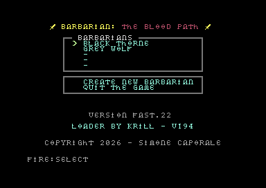
Menu iniziale menu_iniziale.png
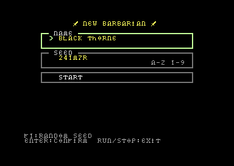
Nuovo barbaro nuovo_barbaro.png
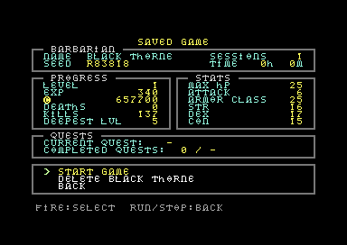
Scheda del barbaro salvato scheda.png
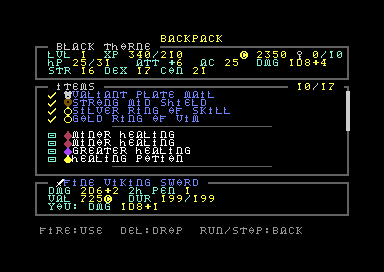
Inventario inventario.png
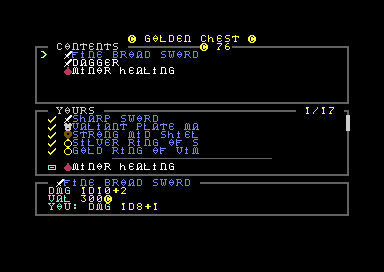
Baule del dungeon baule.png
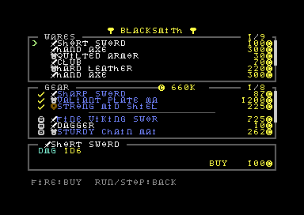
Fabbro fabbro.png
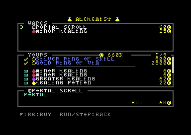
Alchimista alchimista.png
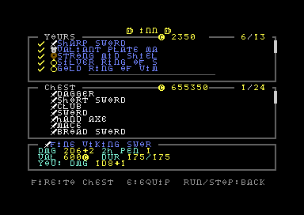
Locanda (baule) locanda.png
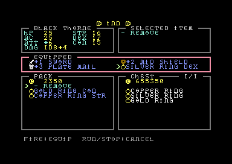
Locanda: scelta dell'anello locanda_scelta.png
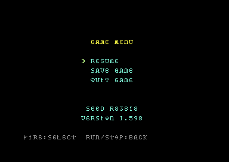
Menu di gioco menu_gioco.png
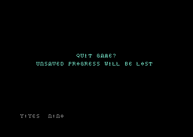
Quit game? quit.png
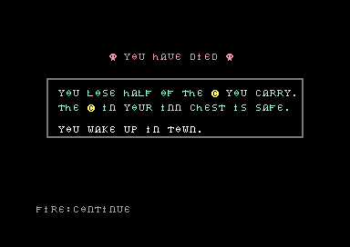
Morte morte.png
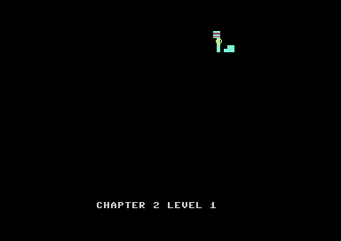
Mappa mappa.png
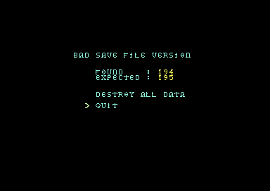
Salvataggi di un'altra versione badsave.png
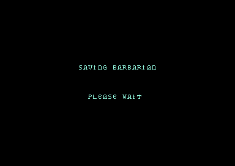
Caricamento / salvataggio io_screen.png
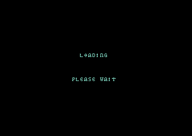
Caricamento generico (locanda) io_generico.png
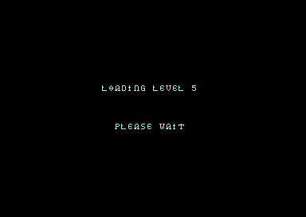
Caricamento di un piano io_livello.png
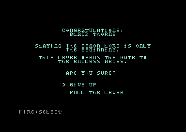
Leva della sala del trono (piano 20) leva.png
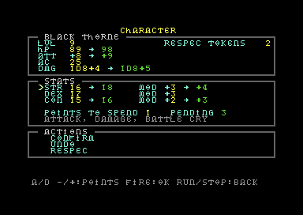
Personaggio (C): punti in attesa, gettoni respec personaggio.png
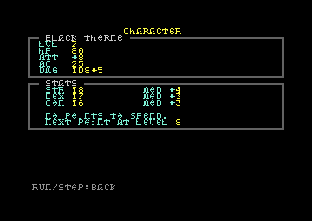
Personaggio (C): senza punti ne' gettoni personaggio_vuoto.png